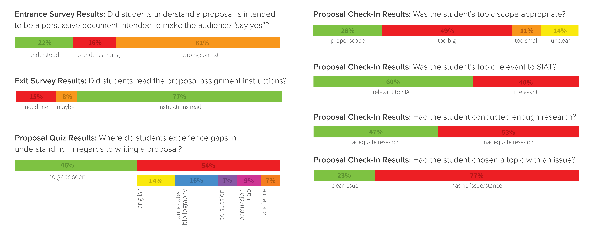
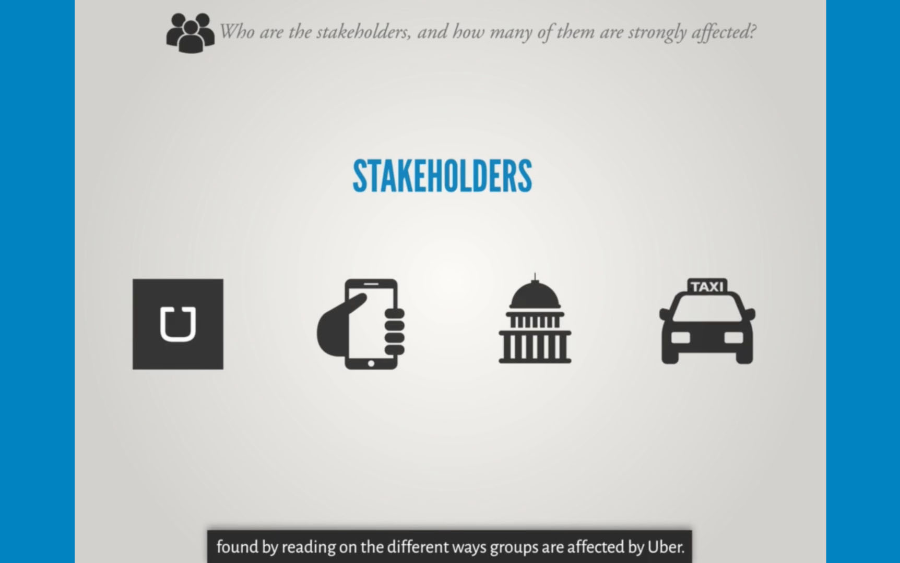

UDL Video.
To help alleviate the problem of upper level persuasive writing students struggling with writing research paper proposals, I created an instructional video to teach IAT 309W students how to effectively write a research paper proposal, using a Universal Design for Learning framework which was later presented at the SFU Teaching and Learning Symposium.
ROLES: Research, Persuasive Writing, Content Strategy, Professional Communication, Motion Graphics/Video Production.
Design Research.
In the School of Information Arts and Technology (SIAT) class, Writing for Design, Media, and Informatics IAT 309W, it was found that across many semesters, students were consistently suffering from below-average grades in the research paper proposal writing assignment. As the final assignment in the class, the research paper, builds on the content within the research paper proposal, having a weaker proposal could lead to lower marks on the final research paper. To help alleviate this problem, myself and one other research assistant were tasked with creating an instructional video to teach IAT 309W students how to effectively write a research paper proposal.
Over the course of the initial five weeks of the class' term, data from numerous surveys and quizzes were collected from all 80 IAT 309W students. An initial survey aimed to establish whether students had completed any proposal writing in previous university courses. Follow-up quizzes and surveys aimed to evaluate how each student defined a proposal, if students had read the instructions that gave detailed information about how to complete the assignment, and where students had gaps in understanding the assignment. The final document prompted students to explain their chosen research paper topic, how much research had been completed on the subject, and what the issue was in this topic.
These responses were catalogued and analysed. 70% of students had proposal writing experience in SIAT, yet only 18% of this group understood the purpose of a proposal. However, in the 30% of students with no experience writing proposals in SIAT, 25% fully understood the purpose of the proposal. Researching proposal writing assignments in other classes in SIAT showed that their structure involves providing a timeline or preparation for a final project, as opposed to a persuasive document intended to make the audience “say yes”.
Furthermore, 53% of students did inadequate research in preparation for the proposal writing assignment, and 77% of students had chosen a topic with no issue or had not yet discerned what the issue was.
Content Strategy.
UNIVERSAL DESIGN FOR LEARNING. We created the video using a Universal Design for Learning framework. Universal Design for Learning involves creating teaching material that faciliates the learning of all students. The following criteria framed our intentions when crafting the video:
DIVERSITY. The video should teach as diverse of a group of students as possible. We chose to create the teaching tool in video format because videos provide valuable content for auditory, visual, and linguistic learners. Furthermore, the use of subtitles and visual cues work to facilitate understanding across different cultural groups, particularly those who are ESL.
ACCESSIBILITY. The video was designed to be easily accessible to the audience. As thorough research was conducted on the students' understanding before the video was created, we were able to perfectly cater the content of the video very specifically to it's audience. Furthermore, as the video is easily found online, students can rewatch the video on their own time, and stop/start/rewind the video to review the content they need extra time with.
INCLUSIVITY. The video intends to function as a tool that includes all students, which fosters learning. We used common course language and familiar SIAT teaching methods (infographic use, video style), and created a video that has a shared vision of the research process. As every student in the classroom watches the video, everyone has a common understanding and can more easily jump into discussions around the course material with the language, definitions, and examples used in the video.
REFRAMING: WHAT IS AN ISSUE?These research insights illustrated that the instructional video should not attempt to explain the entire process of writing a proposal. Instead, it should be focused on defining an issue, and explaining how having an issue is directly related to creating a persuasive document: as if a writer doesn't have an issue, they can’t take a stance on that issue, and will be unable to persuade anyone to agree with their point of view. The video also needed to emphasise the importance of conducting efficient research to write persuasive documents, as many students were not conducting enough research in the proposal writing assignment. Having sufficient research and citing experts across a paper help with persuasion considerably, and also helps identify different stakeholders and every point of view on an issue.
A framework was created for helping students identify an issue. The team identified four questions that established whether or not any topic contained an issue (defined by the team as “an important problem debated by different stakeholders”). These questions are:
WHO ARE THE STAKEHOLDERS, AND HOW MANY OF THEM ARE STRONGLY AFFECTED BY YOUR TOPIC? This question ensures that students complete preliminary research on a topic, and ensure enough people are actually affected in the topic they’ve chosen. Students commonly choose topics in which not enough stakeholders are affected by the “issue”.
IS THERE DEBATE BETWEEN DIFFERENT STAKEHOLDERS? The video also establishes different controversial subjects. By asking this question, we ensure students are choosing a topic that is controversial and has a debatable issue.
WHO HAS WRITTEN ABOUT IT? ARE THERE ENOUGH RESOURCES ON THIS TOPIC? This question continues to reinforce the importance of research and finding a variety of sources to help make a paper credible. It also guides the students towards finding experts within the topic, and using this to enhance their writing ethos.
CAN YOU BEGIN MAKING RECOMMENDATIONS? This question guides students towards taking a stance. Students also commonly find topics that have an issue, but because they don’t begin making recommendations on a particular side or stance, the paper is not successfully persuasive.
These four questions were crafted to encourage students to conduct sufficient research, establish issues that are important or truly debatable, and take a stance on their chosen topic.
The video itself was intended to act as another artifact to reinforce the material being taught in the IAT 309W Course. By using the course’s lessons to help teach students how to complete an assignment, it establishes itself as an effective and credible teaching tool. For example, similar language and rhetoric is used across the course and the video. Furthermore, students are taught to use very specific examples in their writing to nail down a generalization by providing specific instances of ways that the generalization is true. Specific examples are used over the course of the video to help explain concepts, such as using Uber as a paper topic and walking through the established framework with this topic.
Universal Design for Learning.
DESIGN DECISIONS. As the video is intended to be a teaching tool, it needed to be as straightforward and easy to understand as possible. The team had initially attempted to set a 5 minute limit on video length, but after conducting research and creating videos, we found that the length of the video didn’t matter as long as all material was covered. Because the video is shown in class, the students will have to watch it in its entirety (8 minutes, with a follow-up video for another 7 minutes) and be exposed to everything that is being taught. Upon writing the proposal assignments, students can then reference back to the video and only go to parts in which they need clarification on, rendering the length of the video irrelevant.
To illustrate the research process to students, the video was composed significantly of research done on a computer screen, with real screenshots of actual research. Highlights and overlays reinforced key areas of the screen when points were being addressed with the voiceover to reduce cognitive overhead, decrease distraction, and speed up the video (as screenshots didn’t need to be on-screen for long).
This was paired with infographic and icon use across the video. Each concept was tied to an icon, and using these consistently helped students remember how different concepts were linked together.
As earlier mentioned, exemplification was used to help students better understand concepts and frameworks. As opposed to showing earlier student’s work, which is time consuming and requires the explanation of the course’s teacher, the video acts as “a perfect example”, showing exactly the right moves to make when conducting this research process.
The video contains hard-coded subtitles to further facilitate learning. As many students may struggle with english, the team wanted to find the best solution for making the video as accessible as possible. Our research showed that adding subtitles would help struggling students understand, while not being distracting to those who don’t need them.
RESULTS OF VIDEO CREATION. After finishing the video, it was integrated into the course's curriculum. The response from students was overwhelmingly positive: for example, in a survey conducted at the end of the semester, every student in the class indicated that they returned to the video on their own time and watched it again at least once. Some other things that students noted are:
"I used the video to help provide a guideline for what was expected on the essay proposal. I’d watch the video and then take the examples given and try to find similar things to back up my argument. For example, when I didn’t know what a stakeholder was, I looked at the video and saw how the taxi companies, Uber, and customers related together to help identify my stakeholders, which were similar."
“When I pause the video to jot down notes, the subtitles were very helpful for reference.”
“The graphical representations were excellent to illustrate the aspects of persuasive writing. I’m a very visual person, who has a very bad memory. But I do remember graphics and pictures. So that was very helpful for me.”
PRESENTING FINDINGS. After using the video in class for multiple semesters, the research team (myself, one other research assistant, and the class' professor) presented our research findings at SFU's 15th Annual Teaching and Learning Symposium. Educators across many academic institutions from British Columbia, from a wide variety of faculties, watched the video and learned about our process. Using the video as a successful UDL artifact, were able to share educational insights that afforded faculty to take and apply to their own classrooms.